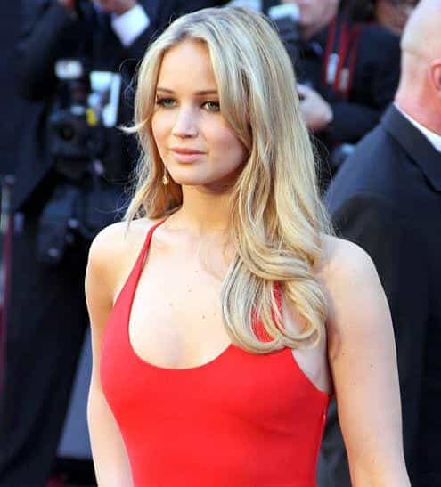

< < < Back
The Oscar “Fallout” Is A Sham – Return Of Kings
Following Sunday’s Oscar event, Ms. Davidson of the New Yorker decided that humor and fact can be interchangeable with sexism and misogyny. Using words such as “ugly,” “hostile,” “sexist,” and “misogynist,” to name a few, she attempts to impart her own skewed view of the world onto her readers.
Let’s take a look at this Pulitzer worthy article:
But the evening’s misogyny involved a specific hostility to women in the workplace
Apparently the author and Merriam-Webster have taken a break, because I fail to see any part of the Oscars that exemplified a hatred or dislike of women. Nor did I see any hostility to women in the workplace. Wait, perhaps the heretic boob song? Yes, that must be it. As she explains:
“We Saw Your Boobs” was as a song-and-dance routine in which MacFarlane and some grinning guys named actresses in the audience and the movies in which their breasts were visible. That’s about it.
EXACTLY. “That’s about it.” A recitation of facts wherein MacFarlane simply stated the name of the actress, the movie she showed her breasts in, and a chorus of literally “we saw your boobs.” Yet somehow Davidson ascribes not only an ill-natured undertone to it, but an active “hostility” towards women in the workplace. These actresses willingly took off their clothes for their movie roles. Why not be proud of your genetic prowess and show off your aesthetically blessed parts for the world to see?
What’s difficult for women who are not revered for their looks to understand is that women enjoy this attention. Attractive women like to feel attractive. Not surprisingly one of the more attractive winners of the night agreed to be part of the skit, showing a pre-recorded feigned surprise (Jennifer Lawrence) at the song.
The Academy is supposedly a trade group, and yet it devoted its opening number to degrading a good part of its membership.
Again, providing details in song format about events that actually and indisputably occurred rises to the level of degradation. Undeterred, Davidson then goes onto what I thought was one of the funnier jokes of the night, the Rihanna/Chris Brown jab (pun intended).
“Django Unchained,” he said, was “the story of a man fighting to get back his woman, who has been subjected to unthinkable violence. Or as Chris Brown and Rihanna call it, a date movie.” Relationships are complicated, and it can take a woman more than one attempt to leave an abuser. But if any woman who goes back is told that she has forfeited sympathy and can be written off with mockery—that the whole thing is now an amusing spectacle—then we’ll end up with more dead women.
So a joke, again rooted in fact about a female singer who openly chants about liking the pain associated with relationships and her sexual deviations including whips and chains, will somehow lead to “more dead women.” Apparently not familiar with Rihanna’s work, Davidson fails to realize that Rihanna is no stranger to placing herself in the limelight for exactly this type of discussion. Let’s look at some of the lyrics Rihanna has sang in recent history:
Feels so good being bad
There’s no way I’m turning back
Now the pain is my pleasure ’cause nothing could measure
[…]
Sticks and stones may break my bones
But chains and whips excite me
Or perhaps this gem:
Just gonna stand there and watch me burn
But that’s all right because I like the way it hurts
Just gonna stand there and hear me cry
But that’s all right because I love the way you lie
I love the way you lie
Ohhh, I love the way you lie
We should not take these lyrics to heart, correct? Well according to Davidson, an off-the-cuff remark by one of the most well-known satirical artist of our times, presented in a known medium for satire, will lead to actual deaths. Yet Rihanna herself is not to blame because as we all know, there is no effect these actual lyrics will have on young, impressionable girls.
Next she throws in some religious commentary for shits and giggles:
There are surely better things to joke about. Instead, we got a borderline anti-Semitic Teddy bear asking where the post-Oscars orgy would be.
I believe “anti-semitism” necessarily involves the hatred of or discrimination of Jews. The lovely teddy bear was, if anything, complimenting Jewish people and their governance of the entertainment industry. Having spoken to some Jewish people randomly after the show, it was unanimously agreed by them that this was the funniest part of the Oscars.
The answer was Jack Nicholson’s house; maybe not the same Jack Nicholson house where Roman Polanski raped a girl, but still, not funny.
Actually that was pretty damn funny. But I digress:
One of the more dispiriting distractions from MacFarlane was the sight of actresses who weren’t all that old whose faces seemed paralyzed, and younger ones who talked about how they hadn’t eaten in a long, long time.
Get over it—real men like fit, trim and skinny girls. Anyone thinking otherwise is delusional. Ever wonder why there is no Lane Bryant Fashion Show nationally televised for all to see? Ever heard of a soon to be bride packing on the pounds before a wedding so she can look all plump in her gown?
It’s possible that the line about not caring that he couldn’t understand a word that Penelope Cruz or Salma Hayek said because they were good to look at was directed as much at Latinos as at women, since he also mentioned Javier Bardem—but that doesn’t make it any better.
So she admits that this joke was not sexist, as it clearly included a male as part of the punch line, yet still cites this as an example in her paragraph leading with the oh so eloquent phrase “misogynistic awfulness.” In line with the entire article, it is devoid of any reasoning for its conclusion.
What are women in Hollywood for? To judge from a few other MacFarlane jokes, they’re for dating men in Hollywood, until the men decide that they’re too old.
Not true, they are there to show off their boobs as well. How quickly one forgets…
When Daniel Day-Lewis, accepting an Oscar for best actor that was presented by Meryl Streep, joked about the two of them having done a “straight swap,” scuttling a plan for him to play Margaret Thatcher and for her to be Lincoln, one wanted nothing more than to see each of them in those roles—not because having them dress in drag would be fodder for a future MacFarlane number but because of how Day-Lewis might convey Thatcher’s temporal power and the strength that Streep would bring to the role of a President.
Yes, this is exactly what most of America was thinking. Please. I cannot even fathom a single instance where one would seriously wonder what Meryl Streep would be like portraying Abraham Lincoln. What planet do you reside on where such dull hypotheticals are pondered yet a light jig about anatomical sightings generates an ire so substantial that it warranted an entire article on purported misogyny?
Movies, and what women do in and to them, are better than the Academy seemed to realize.
You’re right. There’s no way they would give the best actress award to a hot, sassy-mouthed twenty-two year old fem…

Oh wait, they did.
Read More: Why You Should Be Thankful For “Girl Power” Songs